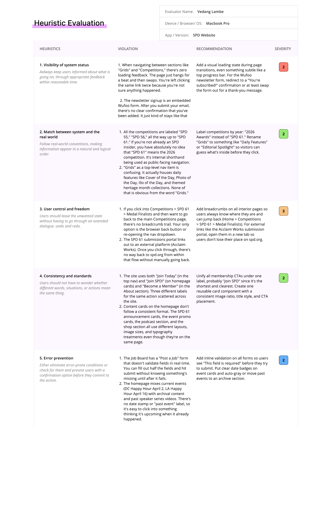

Audit · 01
Heuristic Evaluation
Nielsen's ten heuristics, applied to web and mobile. Ten recurring violations — system-level, not polish.
What it told us
Issues clustered around navigation clarity, consistency, and recognition over recall — the same structural problem in different places.
Why it matteredIt proved the redesign needed to focus on information architecture, not visual polish.
